DriveEasy is a personal project focused on providing real-time traffic and road info saving everyone time and gas money on their daily commute. I worked to reimagine the Google Maps navigation experience on screen. Some research before beginning the project revealed that the interface of the Maps was boring and templatized - I felt like the driver needed to connect more with the app. This set up the goal for DriveEasy.
This app has a better understandability with additional features such as speed limit on the road, vehicle average, driver points and weather forecast (now implemented by Waze).
Userflows
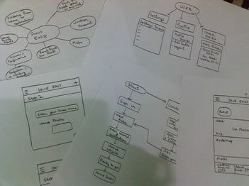
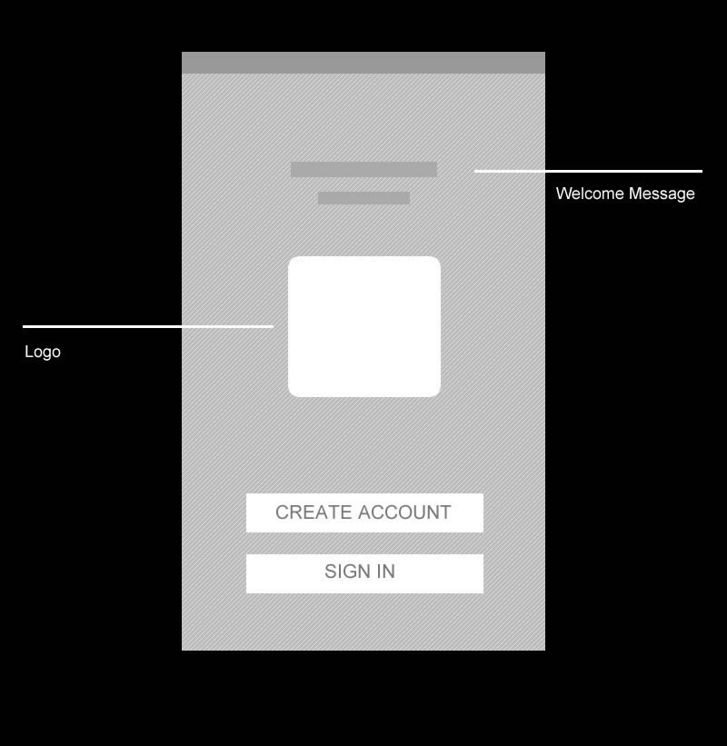
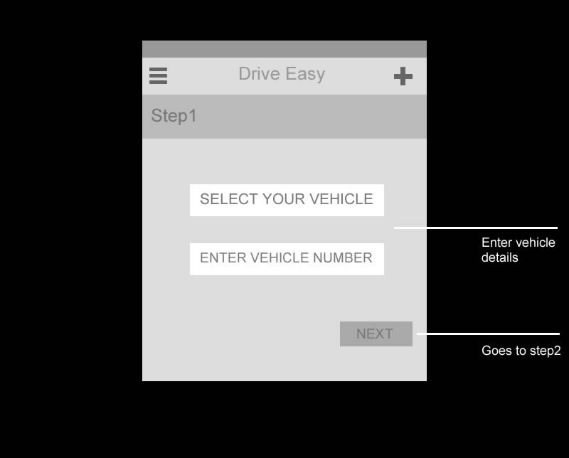
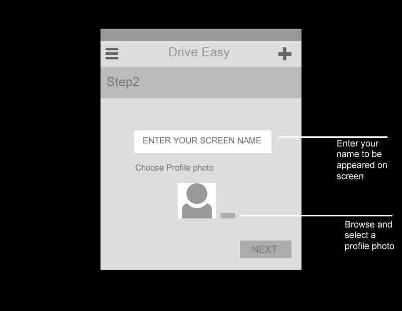
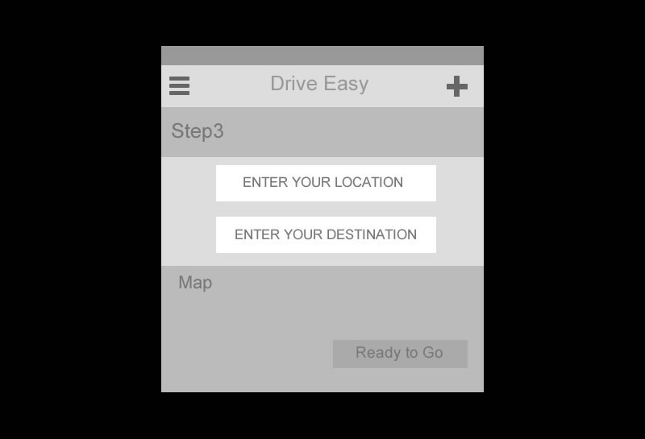
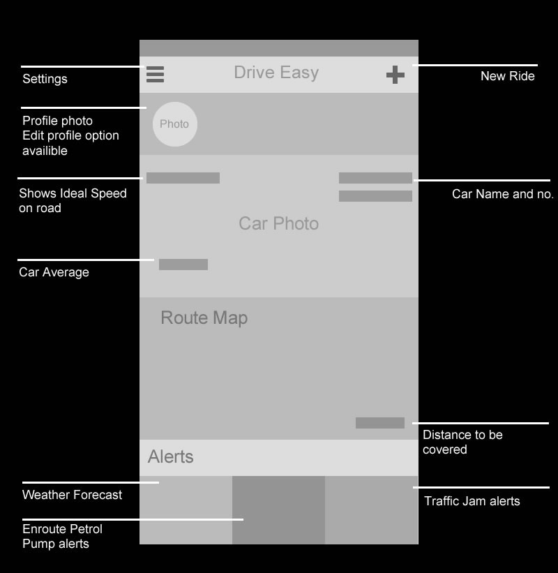
Theme Colors
 Visual Design
Visual Design
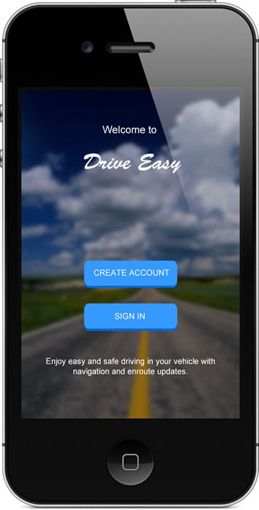
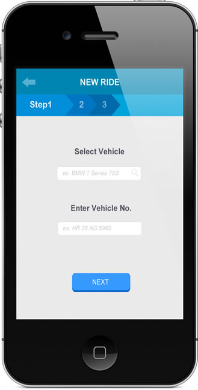
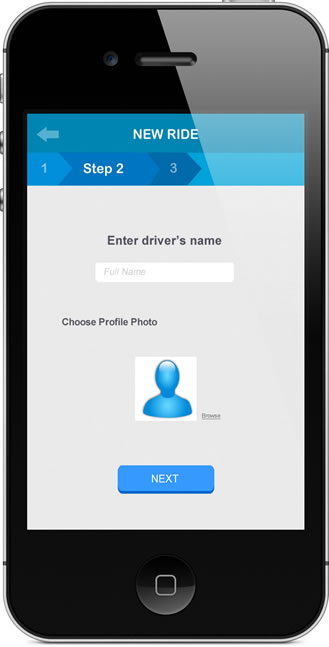
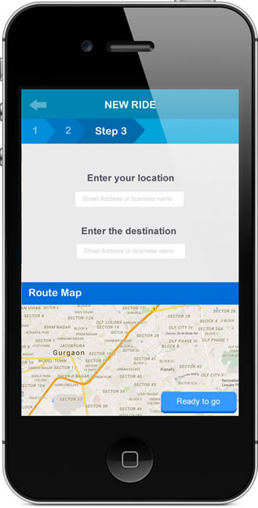
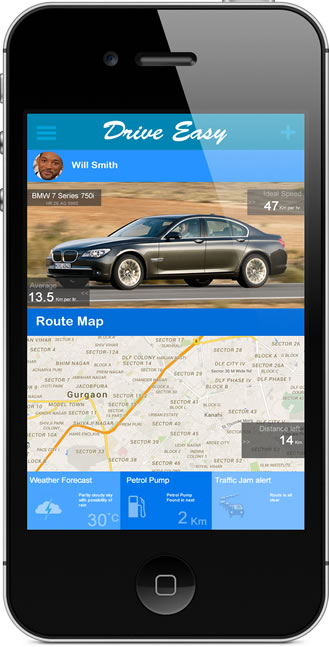